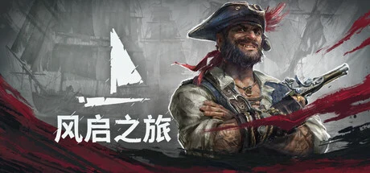

乌兹别克斯坦团队 Kraken Express 开发、Pocketpair 日区发行的海盗时代 PvE 开放世界生存建造，海陆无缝、轻魂系战斗、船只定制，EA 首日峰值近 7 万。
想象你是一名船长，你挑战了传说中的海盗黑胡子——然后你输了，被他暗算，死了。可你没走成：某种神器的力量把你丢回一座荒岛复活，浑身上下一无所有。这是一个架空的海盗黄金时代，加勒比风的海域上，阳光、朗姆酒、海浪和水手号子构成表面的浪漫，可天边悄悄压着一层黑——黑胡子牵扯的，是某种连死人都能驱使的力量。你从捡起第一块木头、搭起第一间荒岛小屋开始，重新做人。
你要做的事很朴素也很硬：建造、锻造、招募船员、把舢板一路升级成护卫舰，然后掉转船头，去找黑胡子算账。托尔图加是这片海域的社交与贸易中心，你在这儿接任务、结盟、也结仇——你帮谁抢谁，世界都记着。海上，你把侧舷对准敌舰炮火齐鸣，冲上去接舷跳帮、刀枪见血；陆上，你钻进内陆迷雾，越往里怪越强，逼得你把家安在海岸线上——到最后你会发现，最危险的是陆地，最安全的反而是大海。
可这趟复仇之路，藏着比黑胡子更深的东西：那个把你从死亡里拽回来的神器，究竟是恩赐，还是把你绑进了某个更大棋局的锁链？天际那股隐隐浮现的黑暗力量——当你终于打到黑胡子面前，他会是终点，还是只是幕布掀开的第一角？而你倾尽一切造出的这支舰队，是为了复仇，还是你早已忘了自己为什么出海？这不是一个关于打赢一场海战的故事，是一个关于「一个死过一次的人，如何在一片会吞掉你的海上，重新挣出一条命和一个答案」的故事——顺风起航之前，你想清楚要开往哪了吗？
「海盗浪漫写实」，是把加勒比黄金时代的海盗自由和荒岛求生的粗粝质感缝进同一片开放海域的美学。底子是虚幻5的写实海洋——出色波浪建模能让最大的船显得渺小，海洋日落、考究的船只、浓密丛林是最受好评的画面；变异在于建筑从鲁滨逊式荒岛小屋一路演进到加勒比庄园。氛围另一半靠船歌、海浪与水手号子撑起。色彩以海天蔚蓝暖阳撞诅咒沼泽阴绿为骨，整体浪漫开阔，又在内陆迷雾里透出黑暗。
「海盗生存建造」这套美学是这几年生存品类演化出的分支。2013 年《刺客信条4：黑旗》把「可操作的风帆海战 + 接舷跳帮」做成了标杆，风启被誉为「生存游戏版黑旗」正是接了这一棒。2018 年《盗贼之海》证明了海盗题材多人合作的持久魅力。2021 年《英灵神殿》则重新定义了「尊重玩家时间」的北欧生存建造范式——无需进食睡眠、生态分区递进，风启的生存框架几乎是它的海盗版。乌兹别克斯坦约15人的小团队 Kraken Express 把这三条线拧成一股，从免费 MMO 的失败原型转型成买断制 PvE，EA 首日就冲到 22 万同时在线——小团队撬动大赛道的典型。
基于体验清单 · 审美偏好 · IP故事三维度综合选出
点击链接跳转到对应平台查看 · 仅整理外部链接